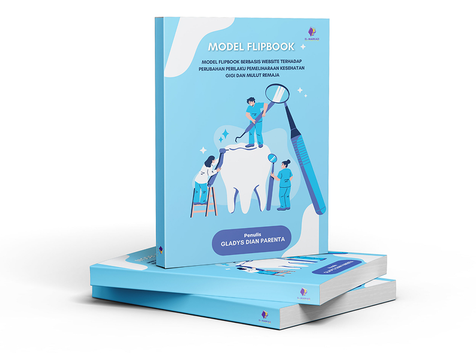

LEARN WITH STATOKU
Platform pembelajaran statistika berbasis ilustrasi dan flipbook interaktif untuk membantu siswa memahami konsep secara sederhana, terarah, dan relevan.

Platform pembelajaran statistika berbasis ilustrasi dan flipbook interaktif untuk membantu siswa memahami konsep secara sederhana, terarah, dan relevan.

Jelajahi materi statistika interaktif kami yang dirancang untuk membuat belajar jadi lebih menyenangkan
Uji pemahaman Anda tentang statistika dengan kuis seru yang akan segera hadir!
Pelajari lebih lanjut tentang misi kami dalam membuat pembelajaran statistika menjadi menyenangkan dan mudah dipahami